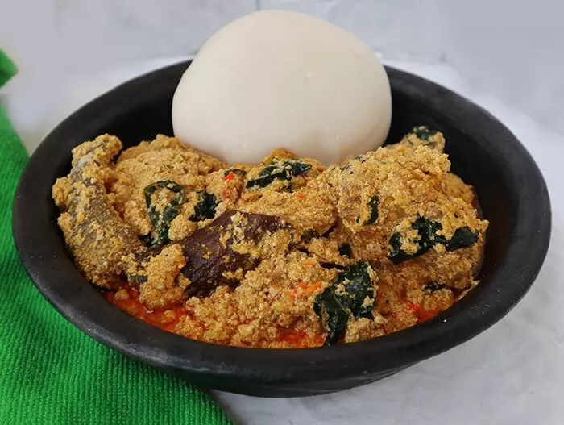

Egusi Soup

How to Make Egusi Soup
Ingredients
- 1KG or 2.2lb beef
- 4 cups of egusi (melon)
- 1lb or 500g Roasted fish.
- Half a cup of ground crayfish
- A handful of sliced ugu (fluted pumpkin) leaves
- 2 seasoning cubes
- Salt to taste
- Pepper to taste (scotch bonnet)
- One medium-sized Stock fish head (okporoko)
- 20g Dawadawa or opkei (local ingredients)
STEPS
- Grind the four cups of egusi with a dry blender or hand-grinding machine
and set them aside in a bowl. Add about a cup of water to it and stir
to make a very thick paste
- Parboil the meat with all the ingredients, it is advisable to parboil meat
with some ingredients before adding them to the principal food,
this improves the taste of the meat.
- Parboil for about ten minutes, then add water and cook till the meat is tender
and the stock (water) is about to dry. Use two seasoning cubes, a teaspoon of
salt and a half cup of sliced onions.
- Pour hot water over the stockfish in a bowl and wash thoroughly to remove sand,
then set aside. Also, remove the center bone from the roasted fishes,
wash and set aside too.
- Set your cooking pot on the fire and add 300ml of palm oil (red oil),
allow to heat for a minute but don’t allow to bleach. Add the egusi paste and
keep stirring for the next eight to ten minutes to form seed-like crumbs.
Then transfer the already cooked meat into the pot, stir.
- Add the washed dry fish, stockfish, ground crayfish, a seasoning cube,
ground scotch bonnet pepper, and 2 cups of water. Then cover halfway and allow
boiling for the next ten minutes.
- Stir occasionally to avoid burning. One spoon of ground dawadawa (local ingredients), and a taste for salt and pepper.
Add a handful of sliced utazi leaves.
Allow to simmer on low heat for 2 minutes, stir, and you just made a delicious pot of egusi soup
Home